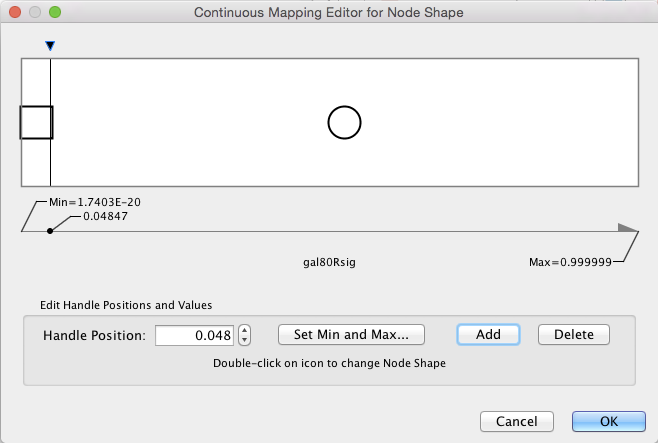

Visualizing Expression Data
Probably the most common use of expression data in Cytoscape is to set the visual attributes of the nodes in a network according to expression data. This creates a powerful visualization, portraying functional relation and experimental response at the same time. Here, we will walk through the steps for doing this.
Loading Network
- Start Cytoscape and download the demo session.
- Open the demo session using
File → Open... - When the network first opens, the entire network is not visible because of the default zoom factor used. To see the whole network, we can use the
View → Fit Content function.
Label the Nodes
- Open the
Style interface by selecting its tab in theControl Panel (the leftmost panel). We are going to use the COMMON name attribute to give the nodes useful names: - Zoom in on the network so that node labels are visible.
- Click the second column (
Map. ) of theNode Label row in theStyle panel. This should produce a drop-down panel with Column and Mapping Type. - Change the
Column toCOMMON by clicking on the field to the right of theColumn label. This should bring up a list of columns. SelectCOMMON . - Verify that the node labels on the network have changed to their common names.
- By default, the Mapping Type is
Passthrough Mapping , which is what we want to use. Other options are Discrete Mapping and Continuous Mapping.
Color the Nodes
- Click on the middle square (
Map. ) next to theFill Color row in theStyle panel. - Click the
-- select value -- cell in theColumn section. - In the drop-down menu of available column names, select
gal80Rexp . - Click the
-- select value-- cell in theMapping Type section. - In the drop-down menu of available mapping types, select
Continuous Mapping . - This produces a default gradient ranging from blue to red for expression values. Notice that the nodes in the network change color. Double-click on the color gradient to change the colors.
- We are going to choose a different pre-formatted color scheme. In the
Continuous Mapping Editor , click the button next toCurrent Palette in the upper left.
Color the Nodes
- Select the first palette listed under the
ColorBrewer tab and clickOK to continue. You will see a warning that the color settings are about to change, clickYes to continue. - The pre-defined palettes come from published recommendations for choosing colors in scientific and cartographic applications, for example BrewerColors.
- The network should now look like this:
Set the Default Node Color
Note that the default node color of pale blue is close to the color range in the selected palette. A useful trick is to choose a color outside this spectrum to distinguish nodes with no defined expression value and those with slight repression.
- Click the
Def. (leftmost) square next toFill Color and choose a light gray color. - Zoom out on the network view to verify that a few nodes have been colored gray.
Set the Node Shape
We imported both expression measurement values and corresponding significance values. We can use the significance values to change the shape of the nodes so that measurements we have confidence in appear as squares while potentially bad measurements appear as circles.
- Click the
Map . cell next to theShape row in theStyle panel. - Click the
-- select value -- cell next toColumn . - In the drop-down menu of available column names, select gal80Rsig.
- Click the
-- select value -- cell next toMapping Type . - In the drop-down menu of available mapping types, select
Continuous Mapping . - This will create an empty icon in the Current Mapping row of the Shape section. Double-click on this icon.
- This action will pop-up a continuous shape selection dialog.
Set the Node Shape
- Click the
Add button. This splits the range of values with a slider down the middle with a node shape icon to either side. - Double-click on either of the sides. This will pop-up a node shape selection dialog.
- In the node shape selection dialog, choose the
Rectangle shape and click theApply button. - Click the black triangle and move the slider to the left, to slightly lower that 0.05, our threshold for significance.
- Close the continuous shape selection dialog and verify that some nodes now have a square shape.

Using Charts
In addition to coloring the nodes, Cytoscape also provides the ability to draw charts and graphs on each node. For example, suppose we wanted to display a bar chart showing all of the expression values on each of our nodes?
- To reset things a little, remove the mapping for
Fill Color by right-clicking over theFill Color row and selectingEdit → Remove Mappings from Selected Visual Properties . - Now change the default value to a lighter shade of grey so we can see our chart.
- In the list of Node Visual Properties, locate the property called Image/Chart 1.
Note: If this property is not listed, selectProperties drop-down at the top of the list and choosePaint → Custom Paint 1 → Image/Chart 1 .
Using Charts
- Select the
Def. (leftmost) cell in theImage/Chart 1 row to bring up theGraphics dialog. - Select the
Charts tab. - Move the three columns containing the expression data (gal1RGexp, gal4RGexp, gal80Rexp) from
Available Columns: toSelected Columns: by selecting the rows and clicking the right arrow. This indicates that we're going to use the data from these three columns to create our chart. - Now select
Heat Strips for the type of bar chart.

Using Charts
- Click on
Options if you want to add labels to the graphs, change the default coloring, etc. - Click
Apply to see the resulting charts.